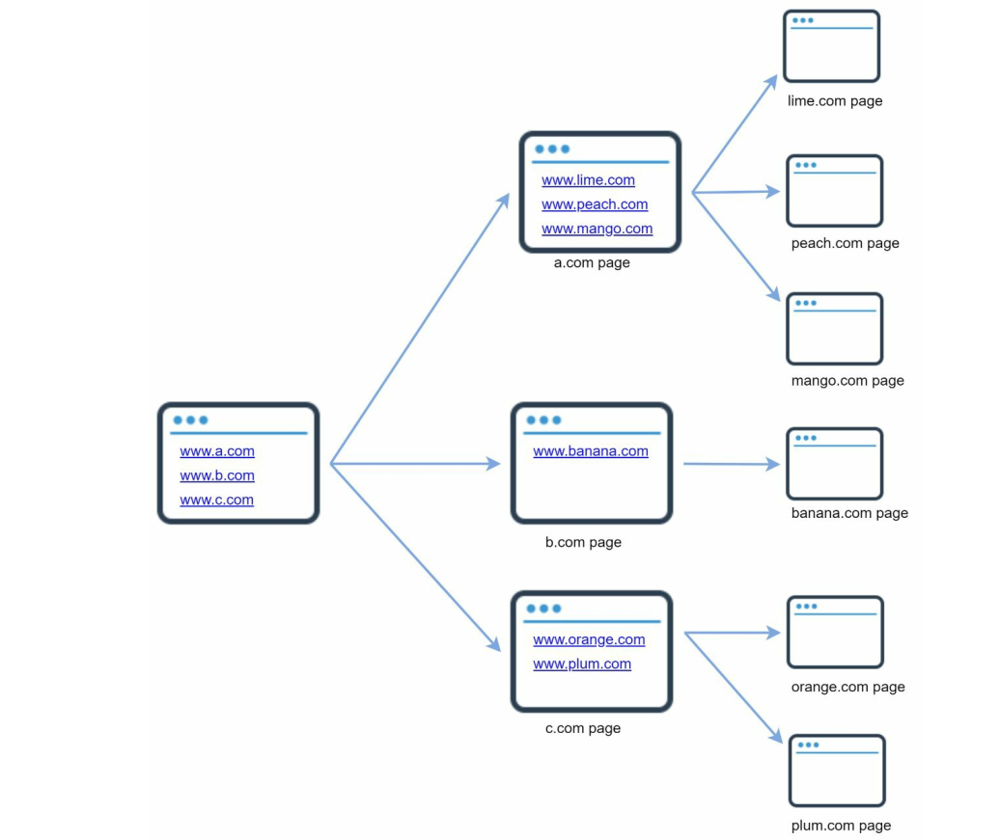
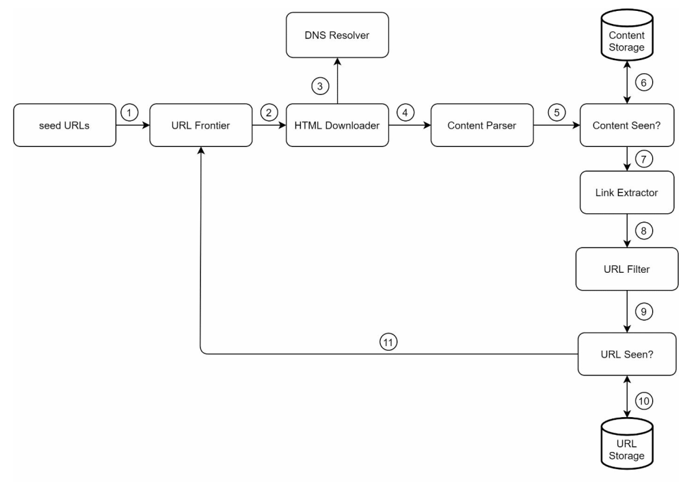
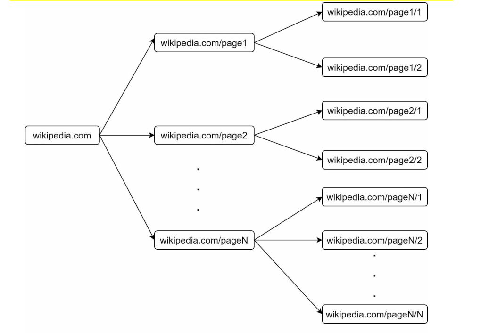
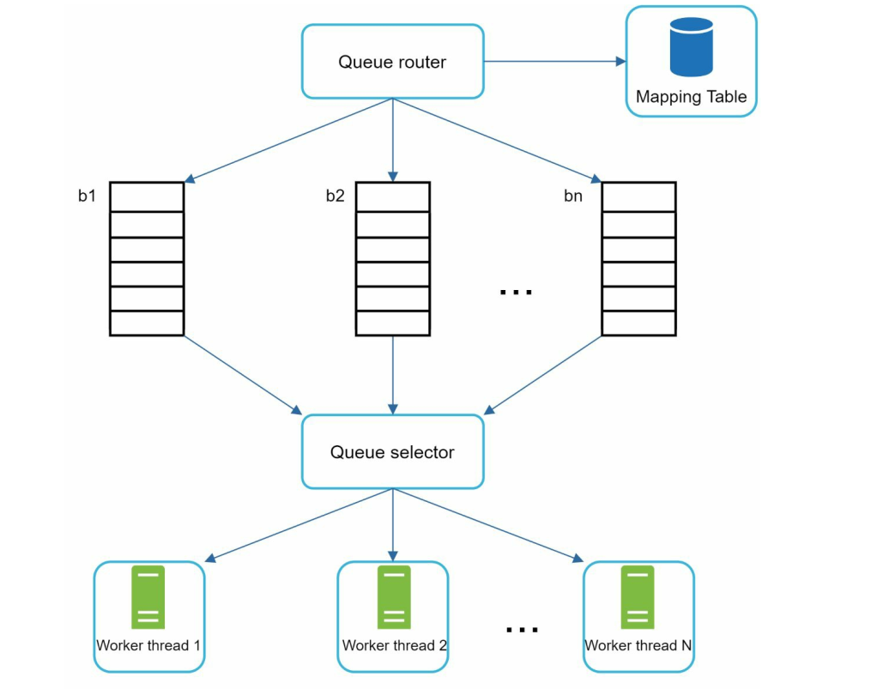
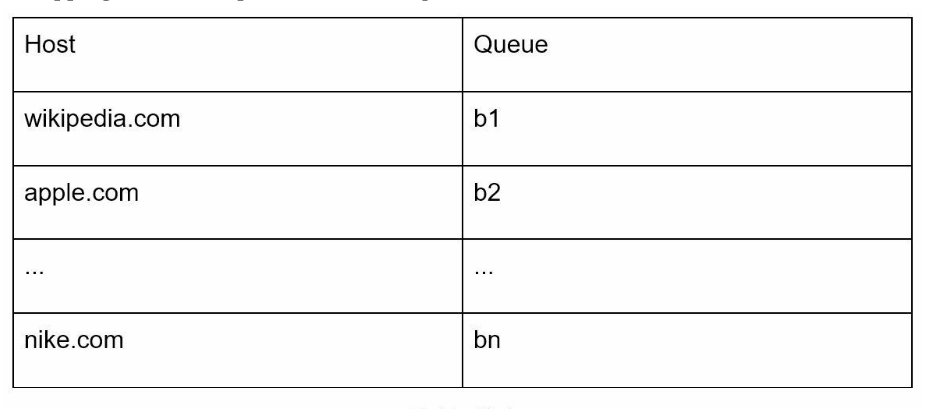
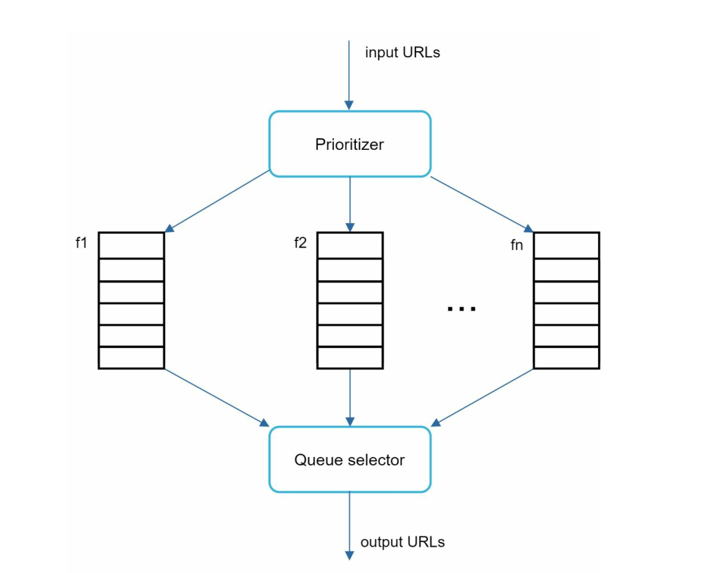
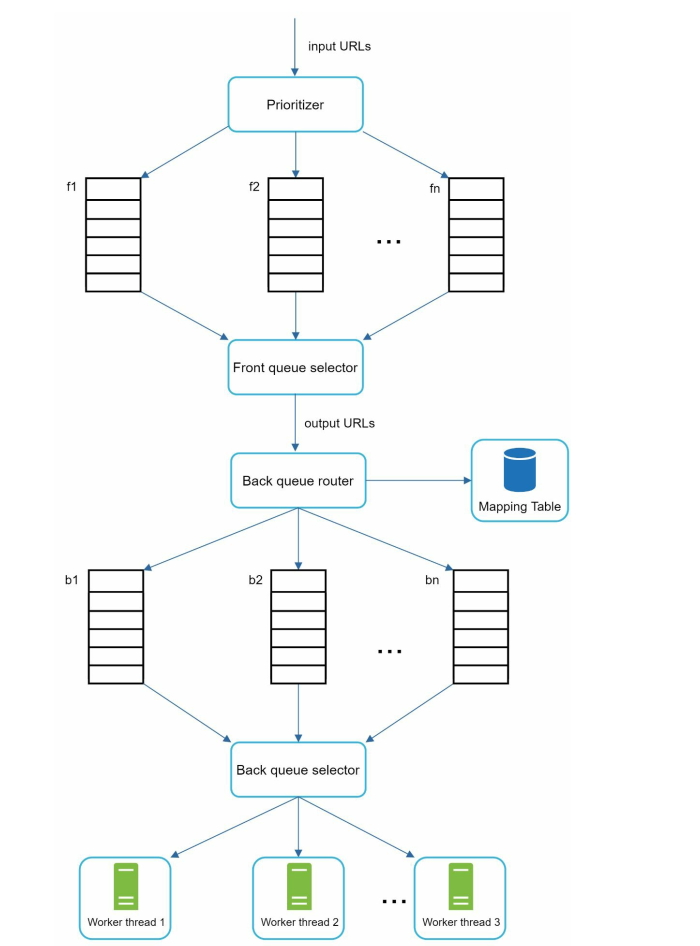
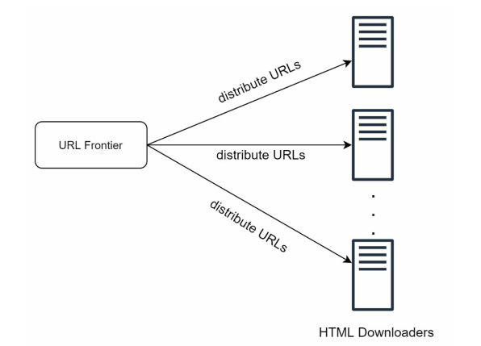
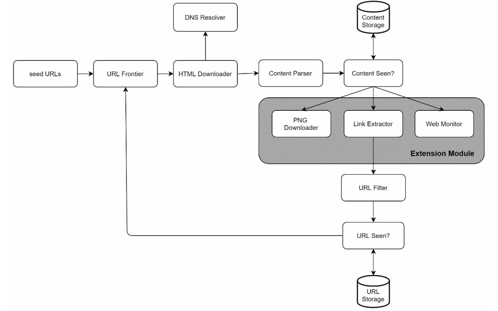

Designing a Web Crawler
A web crawler goes by many names — a robot, a spider, a bot. Whatever you call it, the job is the same: start from a handful of pages, follow every link you find, and keep going until you've seen the internet. Search engines use it to discover new and updated content. That content can be a web page, an image, a video, a PDF — anything with a URL.
Here's the thing that makes this problem fun: the algorithm is a graph traversal you learned in your second semester. That's it. That's the whole idea. And yet building one that actually works at web scale is one of the hardest distributed systems problems out there — because the graph is infinite, adversarial, half-broken, and it fights back.
Let's build one. 🕷️

Step 1: Understand the problem
Same as always — before writing a single box on the whiteboard, ask questions. Here's roughly how that conversation goes:
Q: What's the main purpose of the crawler? Search indexing, data mining, something else?
A: Search engine indexing.Q: How many pages per month?
A: 1 billion.Q: What content types? HTML only, or PDFs and images too?
A: HTML only.Q: Do we care about newly added or edited pages?
A: Yes, we should consider them.Q: Do we store the crawled HTML?
A: Yes, up to 5 years.Q: What about duplicate content?
A: Pages with duplicate content should be ignored.
Notice how much design falls out of those six answers. "Consider edited pages" means we need a recrawl strategy. "Ignore duplicates" means we need a content fingerprint. "Store for 5 years" means we need to go do some math.
Back-of-the-envelope estimation
- Pages per month: 1 billion
- QPS: 1,000,000,000 / 30 days / 24 hours / 3600 seconds ≈ 400 pages per second
- Peak QPS: 2 × 400 = 800
- Average page size: ~500 KB
- Storage per month: 1 billion × 500 KB = 500 TB
- Storage for 5 years: 500 TB × 12 × 5 = 30 PB
30 petabytes. Just to hold the HTML. No images, no video, no index — just text markup. That number is worth sitting with for a second, because it quietly kills a lot of design ideas before you even propose them. Anything that says "keep it in memory" is dead on arrival.
Step 2: High-level design
Here's the whole system. Don't panic at the number of boxes — it's really just one loop that keeps eating its own tail.

Read it as a cycle: URLs go in, pages come out, pages produce more URLs, those URLs go back in. Everything else is a filter bolted onto that loop. Let's walk through the components.
1. Seed URLs
A crawler needs a starting point. A good seed URL is one from which you can reach as much of the web as possible. The general strategy is to divide the URL space into smaller ones and pick seeds for each.
One approach is locality — different countries have different popular websites, so seed per region. Another is topic — split the space into shopping, sports, healthcare, news, and so on. There's no single right answer here; seed selection is genuinely open-ended, and in an interview it's a great place to show you understand the web isn't one uniform blob.
2. URL Frontier
Modern crawlers split the crawl state into two: to be downloaded and already downloaded. The component holding the "to be downloaded" set is called the URL Frontier.
If you remember one component from this post, make it this one. The frontier is where 90% of the actual engineering lives, and we'll spend most of the deep dive here.
3. HTML Downloader
Downloads pages from the internet, using URLs handed to it by the frontier. Sounds trivial. It is not — see the performance section later.
4. DNS Resolver
To download a page, a URL must be translated into an IP address. The downloader asks the DNS resolver: www.wikipedia.org → 198.35.26.96.
5. Content Parser
After a page is downloaded it must be parsed and validated, because malformed pages cause problems and waste storage. Parsing is expensive, so we make it a separate component rather than doing it inline on the crawl server — otherwise the parser becomes the thing throttling your download throughput.
6. Content Seen?
Roughly 29% of web pages are duplicates of something else. Same article syndicated to five sites, same product page under three URLs, the same page with and without a tracking parameter. Without a check, we'd store the same bytes over and over.
You could compare two HTML documents character by character. With a billion pages a month, please don't. Compare hash values instead — constant-size, cheap to compare, cheap to index.
7. Content Storage
Storage for the HTML itself. What you pick depends on data type, size, access frequency, and lifespan. In practice it's a hybrid:
- Most content lives on disk, because 30 PB does not fit in RAM.
- Popular content stays in memory to cut latency.
8. URL Extractor
Parses links out of the HTML. One detail people skip: relative paths must be converted to absolute URLs. /wiki/Systems_design becomes https://en.wikipedia.org/wiki/Systems_design. Get this wrong and your crawler either misses half the web or generates infinite nonsense URLs.
9. URL Filter
Excludes certain content types, file extensions, error links, and URLs from blacklisted sites. This is your first line of defense against wasting bandwidth on things you were never going to index.
10. URL Seen?
Tracks URLs that have already been visited or are already sitting in the frontier. This prevents adding the same URL multiple times — which matters a lot, because the web is extremely link-cyclic. Every page on Wikipedia links back to the Wikipedia home page.
💡 Insight: "URL Seen?" is a perfect Bloom filter use case, just like the one we discussed in the URL shortener post. A hash set of billions of URLs is enormous; a Bloom filter answers "have I seen this?" in a couple of bits per URL. The catch is that it's probabilistic — it can say "seen" for a URL you've never touched, which means you silently skip a page. For a crawler that's a totally acceptable trade: you were never going to crawl 100% of the web anyway, and you save tens of gigabytes of RAM.
Step 3: Design deep dive
Now the interesting part. We'll go through:
- DFS vs BFS
- The URL frontier (politeness, priority, freshness)
- The HTML downloader
- Robustness & extensibility
- Detecting and avoiding problematic content
DFS vs BFS
Think of the web as a directed graph: pages are nodes, hyperlinks are edges. So crawling is graph traversal, and we have two classic options.
DFS is a bad choice. The depth can get very, very deep — you'll chase one chain of links down a hole and never come back up. There's no natural bottom to the web.
BFS is what crawlers actually use, implemented with a plain FIFO queue. But naive BFS has two problems.
Problem 1: BFS is rude
Most links on a page point back to the same host. So when you pop a batch of URLs off a FIFO queue and download them in parallel, you're hammering one poor server with hundreds of concurrent requests.

That's considered "impolite" — and from the server's side, it's indistinguishable from a denial-of-service attack. You'll get IP-banned before you finish crawling one domain.
Problem 2: BFS treats every URL as equally important
A standard queue has no notion of priority. But the Apple home page and a random forum post about Apple products are not equally worth crawling, even though both mention "Apple". We want to rank URLs by page rank, traffic, update frequency, and so on.
Both problems have the same answer: stop using a plain queue. Use a frontier.
URL Frontier
The URL frontier is the component that ensures three things: politeness, priority, and freshness. Let's take them one at a time.
Politeness
The rule is simple: download one page at a time from the same host, with a delay between requests. Implementing that rule at scale is where the design gets clever.

- Queue router: ensures each queue (b1, b2, … bn) only contains URLs from a single host.
- Mapping table: maps each host to its queue.

- Queue selector: each worker thread is bound to one FIFO queue and only pulls from that queue.
- Worker threads 1..N: each downloads pages one by one from its host, with a delay between downloads.
The key insight is that a thread never shares a host with another thread. Politeness stops being a coordination problem and becomes a partitioning problem — and partitioning problems are ones we know how to solve.
💡 Insight: Politeness is just rate limiting, keyed by host — the exact same problem I wrote about in Rate Limiting Algorithms, only this time we're the ones being polite instead of the ones enforcing it. A per-host token bucket is a perfectly good alternative implementation. And in the real world, the polite delay isn't a fixed constant you pick — robots.txt can specify a Crawl-delay, and well-behaved crawlers respect it. Some also adapt dynamically: if a host's response time creeps up, back off.
Priority
A random forum post about Apple products carries very different weight from a post on the Apple home page. Both contain "Apple" — the crawler should still hit the home page first.

- Prioritizer: takes URLs and computes a priority for each.
- Queues f1..fn: each queue has an assigned priority level.
- Queue selector: randomly picks a queue, biased toward higher-priority ones.
Note the word randomly. It's tempting to always drain the highest-priority queue first, but then low-priority URLs starve forever. Biased random selection means important pages get crawled sooner on average, while everything else still makes progress. Starvation avoidance, straight out of an OS scheduler.
Putting both together
Now stack them. Front queues handle prioritization, back queues handle politeness:

A URL enters at the top, gets scored by the prioritizer, lands in a priority queue, gets pulled out with a bias toward importance, then gets routed by host into exactly one back queue, where exactly one worker thread will politely download it. Priority decides what we crawl next; politeness decides when we're allowed to.
Freshness
Web pages are constantly added, deleted, and edited. A crawler has to periodically recrawl to keep the dataset fresh. But recrawling everything is enormously wasteful — most pages haven't changed since you last saw them.
Two strategies help:
- Recrawl based on update history — a page that changed 5 times last week probably will again; one that hasn't moved in 3 years can wait.
- Prioritize important pages — recrawl them more often, and more frequently.
⚡ Practical trick: before spending 500 KB of bandwidth on a recrawl, ask the server whether anything changed. An HTTP HEAD request, or a GET with If-Modified-Since / If-None-Match, gets you a 304 Not Modified for a few hundred bytes. Sitemaps and RSS feeds are even better — many sites will just tell you what changed if you bother to ask.
Storage for the URL frontier
The frontier can hold hundreds of millions of URLs. Memory alone is neither durable nor big enough. Disk alone is durable but slow, and we need to enqueue/dequeue at hundreds of ops per second.
So: hybrid. The bulk of URLs live on disk so space isn't a concern, and we keep in-memory buffers for the enqueue/dequeue hot path, flushing to disk in batches. Same trick you'd use for any high-throughput queue — the disk is the source of truth, memory is the shock absorber.
HTML Downloader
robots.txt
The Robots Exclusion Protocol is how websites tell crawlers what they're allowed to touch. Before crawling a site, fetch its robots.txt and obey it. It looks like this:
User-agent: *
Disallow: /creatorhub/*
Disallow: /rss/people/*/reviews
Disallow: /gp/pdp/profile/
Crawl-delay: 10
Sitemap: https://www.example.com/sitemap.xml
Downloading robots.txt before every single page would be absurd, so we cache it per host with a TTL and refresh periodically.
// robots.txt is fetched once per host, then cached
async function canCrawl(url) {
const host = new URL(url).host;
let rules = robotsCache.get(host);
if (!rules) {
rules = await fetchAndParseRobots(host); // network hit, rare
robotsCache.set(host, rules, { ttl: 24 * 60 * 60 });
}
return rules.isAllowed(url, OUR_USER_AGENT);
}
And to be clear: respecting robots.txt isn't just etiquette. It's the difference between being a crawler and being an attack.
Performance optimizations
1. Distributed crawl. Split the crawl across many servers, each running many threads. The URL space is partitioned so each downloader owns a subset of URLs.

2. Cache DNS results. DNS is a classic crawler bottleneck. Historically, many DNS interfaces were synchronous — one thread issues a lookup and everyone else waits behind it. Keeping our own DNS cache avoids most of those calls entirely.
Worth noting: this is one of the places where the textbook answer has aged. Modern resolvers and runtimes expose async DNS, so multiple threads can resolve concurrently without blocking each other. The cache is still absolutely worth having — you don't want a network round trip per URL when one host serves you a million pages — but "DNS blocks all threads" is no longer the reason.
3. Locality. Distribute crawl servers geographically. Servers physically closer to the hosts they crawl get faster downloads. This applies to everything, not just the downloaders — put your frontier, storage, and cache near the crawlers using them.
4. Short timeouts. Some hosts are slow. Some are dead but still accepting connections. Set a maximum wait time; if a host doesn't respond in time, drop the job and go crawl something else. A crawler's worst enemy isn't failure, it's hanging.
Robustness
At this scale, things break constantly. A few things that keep the system standing:
- Consistent hashing: for distributing load across downloader servers, so adding or removing a server doesn't reshuffle the entire URL space. I wrote a whole post on this — see Consistent Hashing Explained.
- Save crawl states and data: checkpoint the frontier and progress to storage. A crashed distributed crawl can then be restarted by loading the saved state instead of starting from the seeds again.
- Exception handling: the crawler must never crash on a bad response. Malformed HTML, redirect loops, invalid encodings, TLS errors, servers that lie about content length — handle them gracefully and move on.
- Data validation: validate before storing, or you'll pollute 30 PB with garbage.
Extensibility
Every system evolves, and a crawler evolves faster than most. Design it so new content types plug in as modules rather than requiring surgery on the core loop:

- A PNG Downloader module plugs in to download images.
- A Web Monitor module plugs in to watch for copyright and trademark infringement.
Note that our original requirement said "HTML only" — and yet the design accommodates images without redesign. That's what a good abstraction boundary buys you.
Detect and avoid problematic content
1. Redundant content
As mentioned, ~30% of pages are duplicates. Hashes and checksums catch the exact ones cheaply.
💡 Insight: A plain hash (MD5, SHA-1) only catches byte-identical pages. But most real duplicates aren't identical — the same article on two sites differs by a timestamp, an ad slot, or a nav bar, and a one-character change flips the entire hash. That's what SimHash and MinHash are for: locality-sensitive hashes where similar documents produce similar fingerprints, so you can compare by Hamming distance instead of equality. Google published its SimHash near-duplicate work back in 2007 for exactly this reason. Mention this in an interview and you'll stand out.
2. Spider traps
A spider trap is a page that puts the crawler into an infinite loop. The classic is an infinitely deep directory structure:
http://www.spidertrapexample.com/foo/bar/foo/bar/foo/bar/…You can dodge that specific one by capping URL length. But there's no one-size-fits-all solution — a calendar page with a "next month" link will happily generate URLs until the heat death of the universe, and it looks perfectly legitimate. The practical defense is detection by anomaly: sites with spider traps are easy to spot, because you'll discover an absurd number of pages on a single domain. Automatic avoidance is hard; manual blacklisting after detection is what most crawlers actually do.
A cheap extra guard: cap the crawl depth per host, and cap the total pages per domain. Neither is elegant. Both work.
3. Data noise
Some content has little or no value — advertisements, code snippets, spam URLs. It's not useful to index, and it costs you storage and crawl budget. Filter it out where you can.
A few more things worth knowing
-
Server-side rendering: tons of sites generate their links at runtime with JavaScript and AJAX. If you download the raw HTML and parse it, you get an empty
<div id="root"></div>and zero links. The fix is to render the page first — spin up a headless browser, let the JS run, then parse. This is also called dynamic rendering, and it is brutally expensive compared to a plain fetch, so crawlers usually render selectively rather than universally. - Filter out unwanted pages: storage and crawl capacity are finite. An anti-spam component that drops low-quality and spam pages before they enter the pipeline pays for itself immediately.
- Database replication and sharding: the data layer needs both for availability, scalability, and reliability. If you want the details, that's basically the subject of Designing a Key-Value Store.
Wrapping up
So — a web crawler is a BFS. And also it's a distributed rate limiter, a deduplication engine, a priority scheduler, a fault-tolerant queue, a cache hierarchy, and a slow-motion argument with every web server on the planet about how often you're allowed to say hello.
The things I'd want you to walk away with:
- The frontier is the design. Everything interesting — politeness, priority, freshness, durability — lives in that one component.
- Politeness is not optional. It's the difference between a crawler and a DoS attack, and it constrains your parallelism far more than your hardware does.
- Assume everything is broken and adversarial. Malformed HTML, spider traps, dead hosts, duplicate content. The happy path is the rare case.
- Separate the slow parts. Parsing, rendering, and storage all get their own components so they can't throttle the download loop.
- Approximation is fine. Bloom filters, sampled recrawls, SimHash — you're never going to crawl the whole web perfectly, so trade a little accuracy for a lot of scale.
Next time you look at a search result, remember there's a very patient robot out there that had to politely ask a server for that page, wait its turn, check it wasn't a duplicate of something it saw last Tuesday, and file it away in a 30-petabyte pile. Kind of beautiful, honestly.
Happy crawling! 🕸️
- Your fellow soul (harsh).